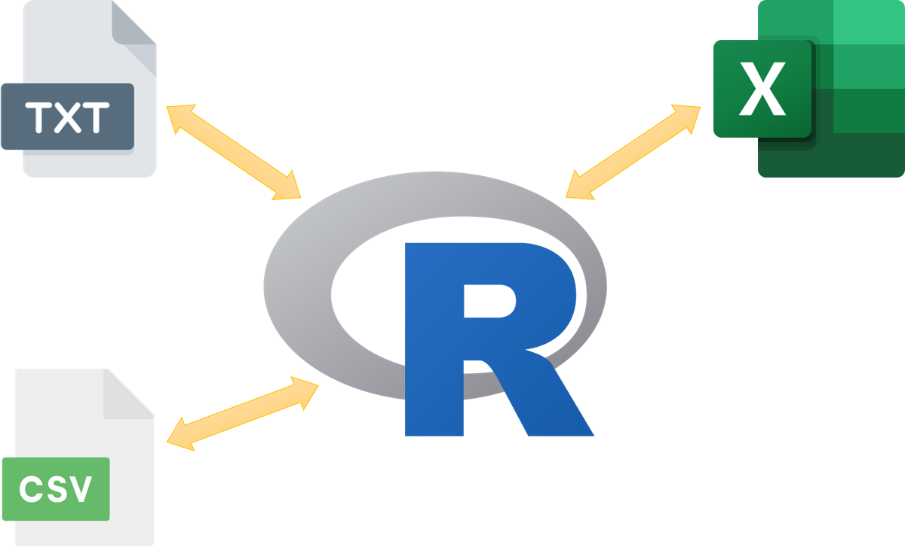
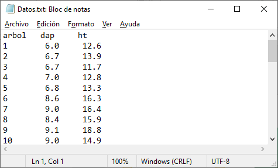

Quienes trabajamos con datos, utilizamos diversos tipos de fuentes, esa particularidad hace que los datos que vamos a utilizar estén disponibles en diferentes tipos de archivos.
Gracias al enorme potencial de R, utilizar diversos tipos de archivos no es un problema mayor, importar datos para poder leerlos y vizualizarlos en R es bastante simple y la capacidad de importación es amplia, desde archivos de texto txt o csv que se pueden importar con funciones del paquete básico de R, hasta archivos de excel xlsx o xls u otros softwares estadísticos e incluso desde otros lenguajes de programación.

Importar un archivo de texto (.txt)
Los archivos con extensión TXT representan a archivos tipo textfile (archivo de texto). Es un archivo informático que estructura series de líneas de texto. Incluye caracteres de control como tabulaciones y saltos de línea, lo que facilita el almacenamiento de datos ordenados en forma de tablas. En windows puede crearse utilizando el comúnmente denominado Block de Notas.

En la carpeta de mi proyecto de R tengo datos de medición de árboles guardados en el archivo archivo_de_texto.txt para poder leerlo en R utilizamos la función read.table(), con tres argumentos principales file, header y sep. file, hace referencia al nombre del archivo incluido la extensión o tipo de formato. header, es un valor lógico, “TRUE” indica que la primera línea es el encabezado de los datos. sep, pide especificar la forma en la cual esta ordenada da línea de datos, en el caso del ejemplo que se muestra a continuacipon tiene un control de tabulación (tab).
#Importar una tabla de datos en formato .txtd<-read.table(file ='files/archivo_de_texto.txt', header =TRUE, sep ='\t')head(d)
En seguida creamos nuestro marco de datos utilizando la función data.frame() cuyos argumentos son los tres vectores creados en el paso anterior y le asignamos el nombre df.
#Construyendo mi data frame o cuadro de datos
En nuestro ejemplo, creamos df con datos de mediciones del dap de 10 árboles.
Cuando trabajos con mediciones forestales es usual calcular nuevas variables de tal manera que necesitamos ampliar nuestra data frame adicionando nuevas columnas, para ello utilizamos la siguiente estrategia.
Exploración de la data frames
En análisis de datos es común trabajar con bases de datos de gran tamaño. Una de las primeras tareas como analista de datos será conocer las variables con las que se va trabajar y comprender la estructura y conocer las características de los datos
En la etapa de exploración también es común auxiliarse de los métodos gráficos, con la finalidad de visualizar la distribución, relación y dispersión de las observaciones que conforman el data frame.
Así mismo, se puede hacer un análisis gráfico de la distribución de una variable o de la relación de pares de variables.
Para explorar parte de nuestros datos cuando se cuenta con bases de datos extensas, a menudo es útil mostrar sólo una pequeña parte de todo el conjunto de datos.